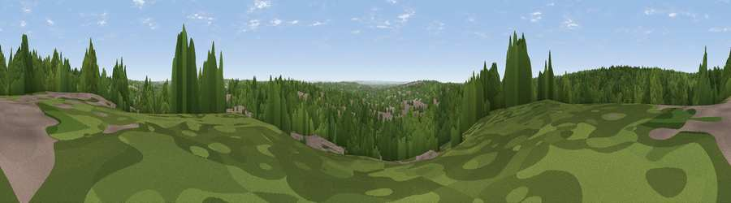

Viewpoint near Loughton
#43657 in England · top 49% of its area beats it · near Loughton · path 97 mWhere it is
The exact computed spot (TQ 42625 97175). Click the marker for map links.
Public access: the nearest public right of way is about 97 m away — the final stretch may cross private land. Computed from Natural England's CRoW access layer and OpenStreetMap rights of way — not the legal definitive map. Always verify locally.
The view, rendered

A 360° render of this exact spot computed from the terrain model, tree cover and land cover — summer colours, afternoon light, calibrated against photographs of famous viewpoints. Real trees, hedges and buildings will differ in detail.
The panorama
Grey silhouette: terrain skyline in each direction (720 bearings, Earth curvature and refraction included). Dashed green: skyline with trees (+15 m) and buildings (+8 m) as obstacles. Blue strip: how far the ground is visible on each bearing.
Where the view opens
Wedge length = distance to the farthest visible ground on that bearing (vegetation-aware). Rings at 10, 25 and 50 km.
What fills the view
66% woodland · 22% built-up · 9% grassland · 4% cropland
Angular shares of the visible panorama (visual magnitude), not map area. Landscape diversity 0.41 (0–1 Shannon).
Key numbers
More beautiful places nearby
The staircase of upgrades: each row has a higher view potential than everything closer. Driving times are estimates from straight-line distance, calibrated against real road routing — check an actual route before setting out.
| Place | Direction | Drive | Score |
|---|---|---|---|
| Wellington Hill | NW · 2 km | ~5 min | 21.3 |
| Viewpoint near Sewardstonebury | W · 3 km | ~7 min | 32.4 |
| Viewpoint near Sewardstonebury | WSW · 5 km | ~11 min | 32.7 |
| Viewpoint near Wood Green | WSW · 15 km | ~26 min | 35.9 |
| Viewpoint near Great Warley | ESE · 16 km | ~29 min | 40.0 |
| Jury Hill | ESE · 21 km | ~35 min | 48.5 |
| Viewpoint near Horndon On The Hill | ESE · 27 km | ~43 min | 51.8 |
| Viewpoint near Vange | ESE · 31 km | ~48 min | 58.2 |
51.65528, 0.06040 · source: screening · position refined by local search. Computed location — check access rights before visiting.